目录
少样本学习系列进入第三部分（前文见 和 ）。本文将讨论两种生成合成训练数据的方法。数据不足时的学习（一）：半监督学习数据不足时的学习（二）：主动学习
数据增强#
数据增强的目标是在保持语义含义不变的前提下，修改输入的表达形式（如文本措辞、视觉外观）。
图像增强#
基本图像处理操作#
有多种方法可以在保留图像语义信息的同时对其进行修改。我们可以使用以下任意一种增强方式，或将多个操作组合使用。
特定任务的增强策略#
如果已知下游任务，可以学习最优的增强策略（即使用哪些处理操作以及如何按顺序组合它们），以最大化下游任务的性能。
图像混合#
图像混合方法可以利用现有数据点构造新的训练样本。
文本增强#
词汇编辑#
简单数据增强（EDA；Wei & Zou，2019）定义了一组简单但强大的文本增强操作。对于给定句子，EDA 随机选择并应用以下四种操作之一：
其中 p=\alpha 和 n=\alpha \times \text{sentence_length}，其直观理解是较长的句子能够承受更多噪声而仍保持原有标签。超参数 \alpha 大致表示单个增强操作可能改变句子中词语的比例。
实验表明，与不使用 EDA 的基线相比，EDA 能在多个分类基准数据集上提升分类准确率。在训练集较小时性能提升更为显著。EDA 中的四种操作均有助于提升分类准确率，但在不同的 \alpha 下达到最优。
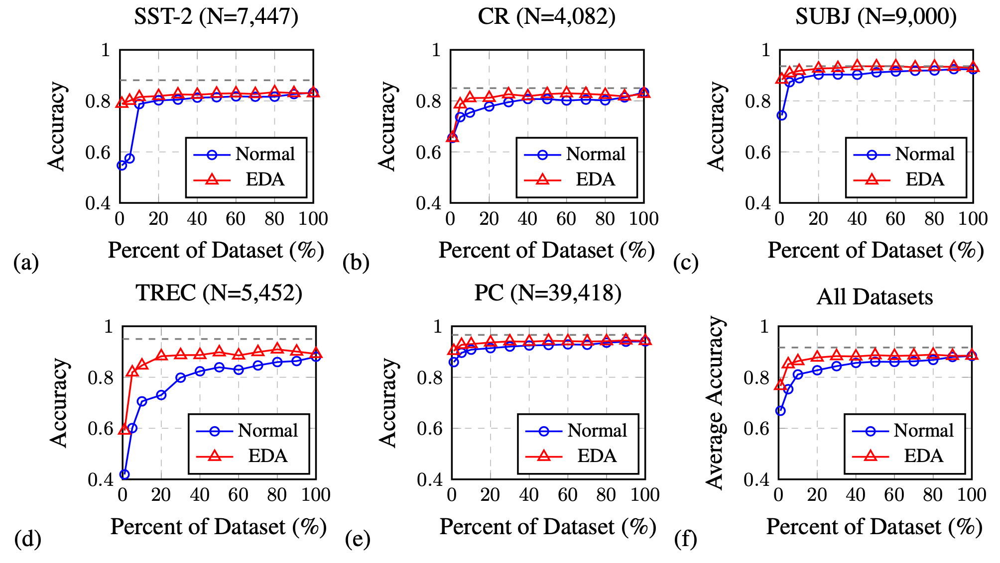
上下文增强（Kobayashi，2018）通过从双向语言模型（如 BERT）学习到的概率分布 p(.\mid S\setminus{w_i}) 中采样，来替换位置 i 处的词 w_i。这样，单词会被同义词或适合上下文的相似词替代。为确保此类操作不改变标签，该语言模型被训练为标签条件双向 LM。条件 BERT（CBERT；Xing Wu 等，2018）将 BERT 扩展为在类别标签条件下预测被掩码的 token，可用于上下文增强预测。
回译#
回译通过将文本样本翻译成另一种语言，再翻译回原语言来生成增强数据。翻译需在两种语言间双向进行，且两个方向都应具有足够好的性能，以避免语义含义的显著损失。
Mix-up#
也可以将 Mixup 应用于文本（Guo 等，2019），但需在嵌入空间上进行以获得性能提升。该方法依赖于专门设计的模型架构，在词或句子嵌入上进行预测。在嵌入空间中加入对抗噪声作为数据增强的方式已被证明能提升模型训练的泛化能力（Zhu 等，2019）。
音频增强#
以下是由 Wang & van den Oord（2021） 总结的几种常用音频数据增强方法，可在原始音频或频谱图上操作。
音频 mixup。给定两个音频片段 \mathbf{x}_1 和 \mathbf{x}_2，混合后的版本 \hat{\mathbf{x}} = \alpha \mathbf{x}_1 + (1-\alpha)\mathbf{x}_2 应关联于主导输入的标签。音频 mixup 用更真实的噪声来增强数据。
时间掩码。可以掩盖一小段连续的音频，而不会丢失语义信息。
频率掩码。可以丢弃频谱图上一小部分频率分量，而不改变关联标签。
频率偏移。可将频谱图按 [-F, F] 之间的整数进行偏移，其中 F 是最大偏移量。这是一种低成本的改变音频音高的增强方式。
架构增强#
带有 dropout 层的模型可以通过对同一输入样本应用不同的 dropout 掩码来创建增强样本。例如，在对比学习模型 对比表示学习（Guo 等，2021）中，同一个样本被两次输入编码器，使用不同的 dropout 掩码，这两个版本构成正样本对，而批次内的其他样本则被视为负样本对。
Dropout 通过向模型的内部表示添加噪声来增强数据。它也可以以更结构化的方式应用，例如 cutoff（Shen 等，2020），其中随机去除 token 嵌入矩阵的若干块。
数据合成#
鉴于生成高质量、逼真图像比生成类人自然语言文本要困难得多，且近年来大型预训练语言模型取得巨大成功，本节仅聚焦于文本生成。若想了解如何合成逼真图像，可参考关于 从 GAN 到 WGAN、从自编码器到 Beta-VAE、 和 的文章。基于流的深度生成模型什么是扩散模型？
将语言模型作为噪声标注器#
Wang 等（2021） 探索了通过少样本提示利用 GPT-3 作为弱标注器的方法，其成本仅为人工标注的十分之一。论文指出，使用 GPT-3 标注的数据本质上是在进行：对未标注样本的预测对模型施加了熵正则化，避免类别间高度重叠，从而帮助提升模型性能。数据不足时的学习（一）：半监督学习
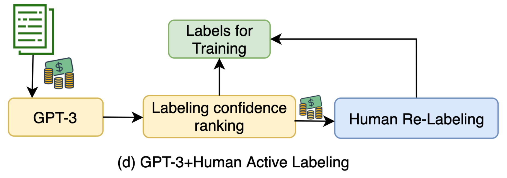
通过 选出的、具有最高不确定性的 GPT-3 标注样本会被发送给人工标注者重新标注。少样本提示中只包含少量人工标注的示例，因此标注成本受到限制。合成样本按标签 y 的预测 logit 排序，得分最低的样本会进行重新标注。数据不足时的学习（二）：主动学习
GPT-3 标注在低成本区间能取得较好结果，但在投入足够资金进行数据收集时，与人工标注仍存在差距。这暗示了以下不等式，尽管“大量”或“噪声”的具体含义取决于任务细节：
大量高质量数据 > 大量噪声数据 > 少量高质量数据。
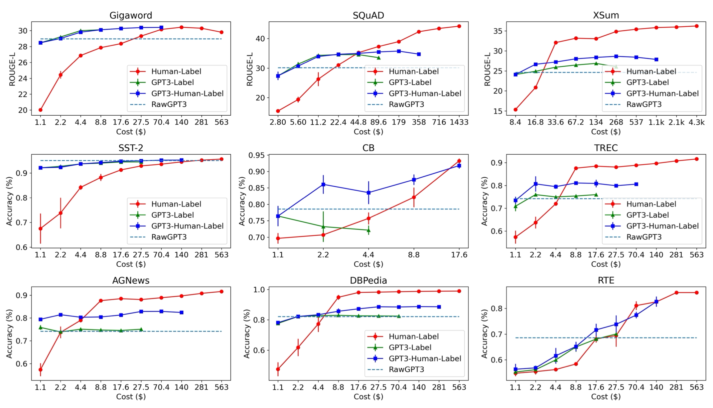
将语言模型作为数据生成器#
如果已有足够用于文本分类任务的训练数据集，我们可以微调语言模型来生成更多以标签为条件的训练样本（Anaby-Tavor 等，2019，Kumar 等，2021）。
基于语言模型的数据增强（LAMBADA；Anaby-Tavor 等，2019）正是采用了这一思路，该过程同时涉及微调分类器和样本生成模型。
最终分类器在 \mathcal{D}_\text{syn} \cup \mathcal{D}_\text{train} 上进行训练。该过程可以重复多次，但尚不清楚收益是否会迅速递减，或重复过程是否会引入自我偏差。
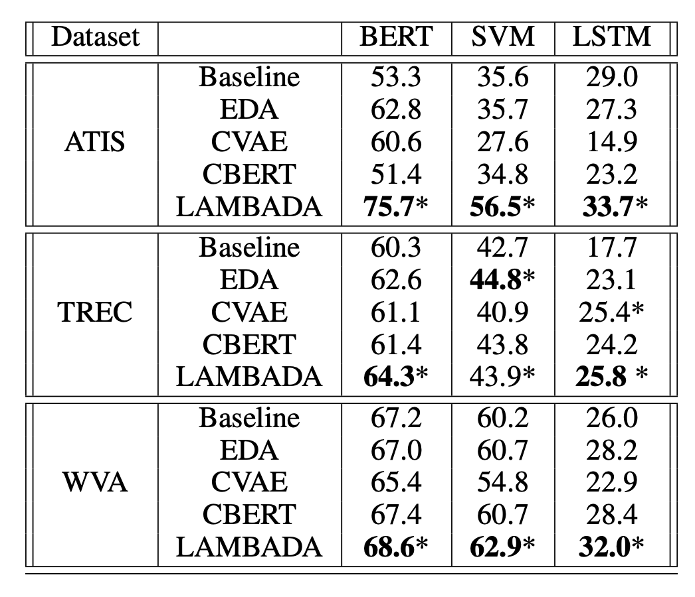
为简化 LAMBADA，我们实际上可以去掉对微调生成模型和具有一定规模的现有训练数据集的依赖（上述第 2 步）。无监督数据生成（UDG；Wang 等，2021）依赖于在大规模预训练语言模型上进行少样本提示，来生成高质量的合成训练数据。与前面让 LM 给定 \mathbf{x} 预测 y 的方法相反，UDG 是根据标签 y 来合成输入 \mathbf{x}。随后在一个特定任务的模型上使用这个合成数据集进行训练。
Schick & Schutze（2021） 提出了类似思路，但应用于自然语言推理（NLI）任务而非分类任务，让 PLM 根据特定任务指令来撰写相似或不同的句子对。
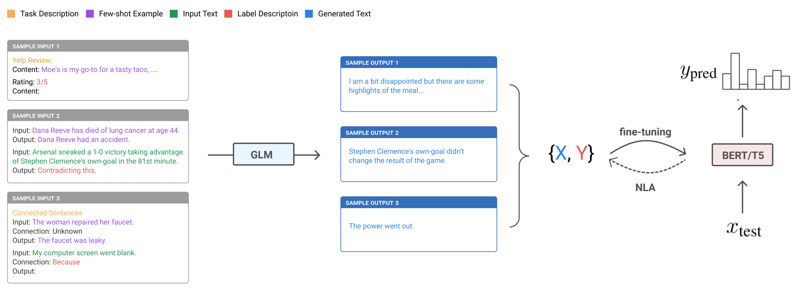
UDG 的少样本提示包含少量无标签示例，以及对期望标签的任务特定自然语言描述。由于部分生成样本存在噪声，他们实现了噪声标签退火（NLA）技术，在训练过程中逐步过滤掉可能错位的样本。当模型开始以高置信度与伪标签不一致时，NLA 会随时间逐渐移除噪声训练信号。在每个训练步骤 t，如果给定样本 (\mathbf{x}_i, \hat{y}_i) 满足以下条件，则被视为噪声样本并应被移除：
注意阈值 \mu_t 是随时间变化的，初始值为 0.9，随后随时间逐渐退火至 1/\text{num_of_classes}。
实验结果显示，UDG 相比少样本推理有显著提升，而 NLA 又带来了额外增益。在若干情况下，其结果甚至能与监督微调相当。
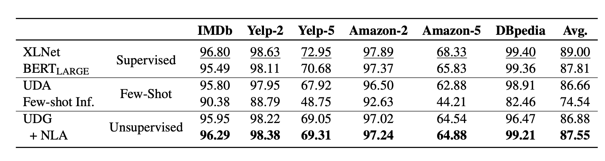
Han 等（2021） 通过少样本数据生成、蒸馏和回译，在翻译任务上取得了当时的最优结果。假设无法获取平行翻译数据，该方法包含以下步骤：
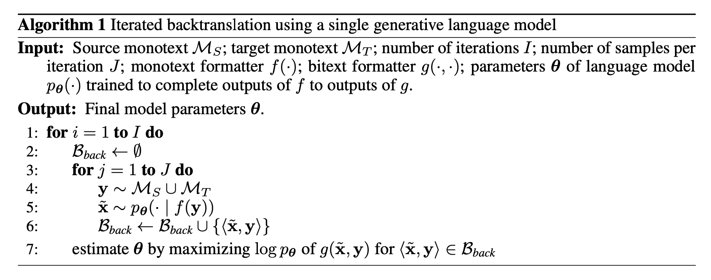
上述方法的成功依赖于一个好的预训练 LM 来启动初始翻译数据集。迭代式的少样本生成、蒸馏结合回译，是一种从预训练 LM 中提取并提炼翻译能力，并将其进一步蒸馏到新模型中的有效方式。
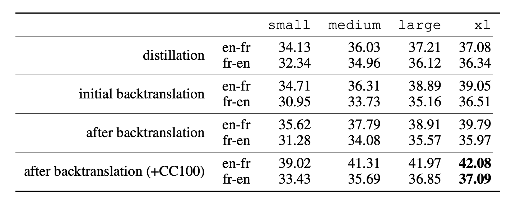
如何量化生成数据的质量？#
给定所有通过数据增强或数据合成得到的生成数据，我们如何量化它们在提升模型泛化能力方面的质量？Gontijo-Lopes 等（2020） 提出了两个维度：亲和度（affinity）和多样性（diversity）。
最终模型性能取决于这两个指标都足够高。
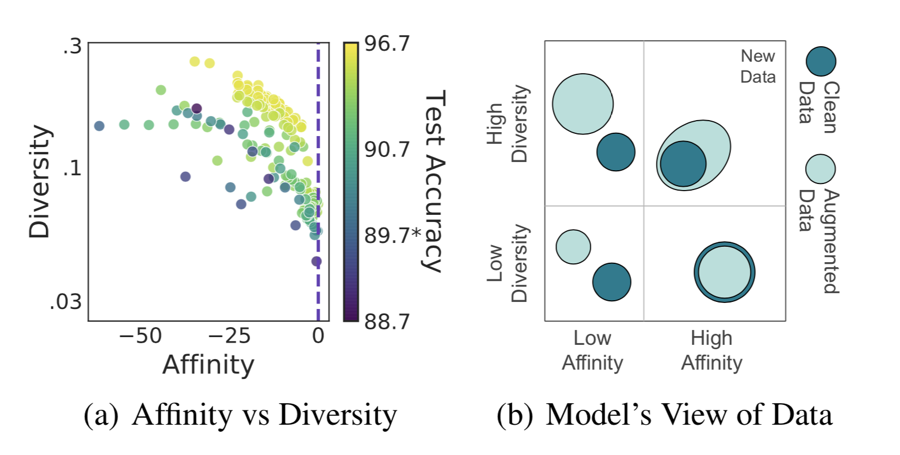
关于相关性和多样性存在许多量化指标，根据是否有参考数据，形式各不相同，例如文本的困惑度、BLEU 分数，以及图像的 inception score。这里不再列出具体的量化质量指标，因为清单会非常冗长。
使用噪声数据进行训练#
通过模型生成或数据增强来收集大量噪声数据非常方便，但很难保证增强和生成的数据能 100% 准确。鉴于深度神经网络容易过拟合噪声标签并“记住”损坏的标签，当使用生成数据时，我们可以采用针对噪声标签的训练技术（噪声鲁棒训练），以稳定并优化性能。关于从噪声标签中学习的更全面综述，请参考这篇综述论文（Song 等，2021）。
正则化与鲁棒架构#
一般来说，设计用于避免过拟合的机制在处理中等噪声数据时应能提升训练鲁棒性，例如权重衰减、dropout、批标准化。事实上，好的数据增强（即仅修改非本质属性）本身也可以视为一种正则化方式。
另一种方法是在网络中增加一个专用的噪声适应层，用于近似未知的标签损坏映射（Sukhbaatar 等，2015，Goldberger & Ben-Reuven，2017）。
Sukhbaatar 等（2015） 在网络架构中引入了一个额外的线性层 Q，用于调整预测以匹配噪声标签分布。噪声矩阵 Q 初始被固定为单位矩阵，仅更新基础模型参数。一段时间后，Q 开始更新，并预期捕捉数据中的噪声。噪声矩阵在训练时加入正则化，鼓励它匹配噪声分布，同时保持基础模型对真实标签的预测准确。
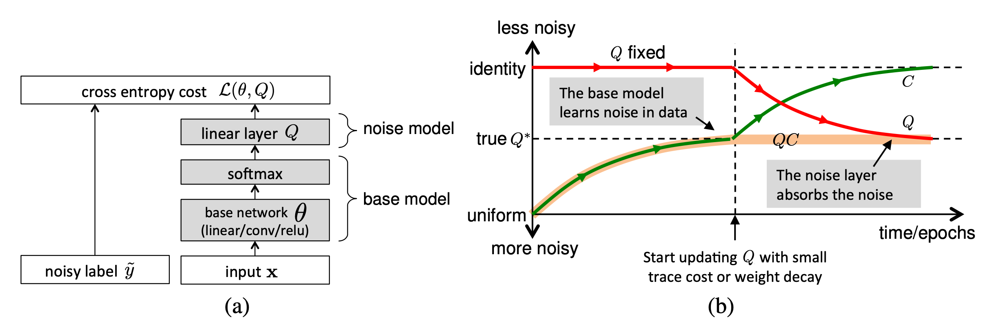
然而，很难保证这样的噪声矩阵层只会捕捉噪声转移分布，而且实际学习起来并不容易。Goldberger & Ben-Reuven（2017） 提出在基础模型之后端到端地添加一个额外的 softmax 层，并使用EM 算法，将正确标签视为潜变量，将噪声过程视为具有未知参数的通信信道。
鲁棒学习目标#
除了最常用的交叉熵损失外，一些其他学习目标也被证明对噪声标签具有更强的鲁棒性。
例如，MAE（均绝对误差）比 CCE（分类交叉熵）对噪声标签更鲁棒，因为它对每个样本一视同仁（Ghosh 等，2017）。但 MAE 缺乏对训练样本的不同加权，导致训练时间显著更长。受 MAE 与 CCE 之间权衡的启发，Zhang & Sabuncu（2018） 提出了广义交叉熵（GCE），它是 CCE 损失的泛化形式，对噪声数据具有鲁棒性。
为了同时利用 MAE 提供的噪声鲁棒性和 CCE 的隐式加权机制，GCE 采用负 Box-Cox 变换作为损失函数：
其中 f^{(j)} 表示 f(.) 的第 j 个元素，q \in (0, 1]。 当 q \to 0 时 \mathcal{L}_q 等价于 CCE，当 q=1 时则变为 MAE。实验表明，存在一个 q 的阈值，超过该阈值就不会出现过拟合，且数据越噪声，该阈值应越高。
给定真实标签和预测标签 y_i, \hat{y}_i \in \{0, 1\}，令 u_i=y_i \cdot \hat{y}_i，零一损失 \mathcal{L}_{01}(\mathbf{u}) = \sum_{i=1}^n \mathbb{1}[u_i < 0] 是另一种被证明对噪声数据鲁棒的学习目标。最小化零一损失的经验风险被证明等价于最小化经验对抗（最坏情况）风险（Hu 等，2018）。由于最坏情况风险是干净数据分布分类风险的上界，最小化最坏情况风险可以降低真实风险，这使得零一损失特别鲁棒。然而零一损失不可微，无法直接优化。一种解决方案是近似零一损失的上界，并最小化该上界损失。
hinge 损失 \mathcal{L}_\text{hinge}(\mathbf{u}) = \sum_{i=1}^n \max(0, 1 - u_i) 定义了零一损失的一个粗略上界。Lyu & Tsang（2020） 提出了课程损失（CL），它是一个比传统替代损失（如 hinge 损失 \mathcal{L}_\text{01}(\mathbf{u}) \leq \mathcal{L}_\text{CL}(\mathbf{u}) \leq \mathcal{L}_\text{hinge}(\mathbf{u})）更紧致的上界。
其中 \ell(u_i) 是零一损失的基础替代损失（如 hinge 损失），最优权重变量 \mathbf{w} 需要学习得到。
给定标签损坏率 \rho，基于以下直觉构造噪声剪枝课程损失（NPCL）：理想模型应该能正确分类 n(1-\rho) 个干净标签样本，但错误分类 n\rho 个损坏标签样本。如果 \rho 是已知先验，我们就知道要剪枝多少个损失最大的样本。假设 \ell(u_1) \leq \dots \leq \ell(u_n)，则 u_{n(1-\rho)+1} = \dots = u_n =0，以下 NPCL 仅对 n(1-\rho) 个样本应用基础 CL：
在 CIFAR-10 上的实验表明，NPCL 与 GCE 性能相当，且在噪声率增加时表现更好。
标签校正#
由于已知部分标签不正确，噪声鲁棒训练可以显式地将标签校正纳入考虑。
一种方法是依赖噪声转移矩阵的估计，并用它来校正前向或反向损失，称为 F-correction（Patrini 等，2017）。首先假设共有 k 个类别，噪声转移矩阵 C \in [0, 1]^{k\times k} 可观测，且标签翻转概率不依赖于样本输入而仅依赖于标签（即随机分类噪声，RCN）。令 \tilde{y} 表示损坏的标签。C 的每个元素代表一个标签翻转为另一个标签的概率1，
然后我们可以执行前向标签校正过程，将噪声转移矩阵的先验知识融入预测中。
用矩阵形式表示为 \mathcal{L}(\hat{p}(y \vert \mathbf{x})) = - \log C^\top \hat{p}(y \vert \mathbf{x})。然而，这样的噪声转移矩阵通常是未知的。如果我们能访问干净数据集，则可以估计噪声矩阵 C（Hendrycks 等，2018），方法是在干净数据上计算混淆矩阵。后续我们将干净可信数据集记为 \mathcal{D}_c，噪声数据集记为 \mathcal{D}_n。
其中 \mathcal{A}_i 是来自 \mathcal{D}_c 中标签为 i 的数据子集。
令 f(x) = \hat{p}(\tilde{y} \vert \mathbf{x}; \theta)，该模型应在干净数据 \mathcal{D}_c 上用 \mathcal{L}(f(\mathbf{x}), y) 训练，在噪声数据 \mathcal{D}_n 上用 \mathcal{L}(\hat{C}^\top f(\mathbf{x}), \hat{y}) 训练。
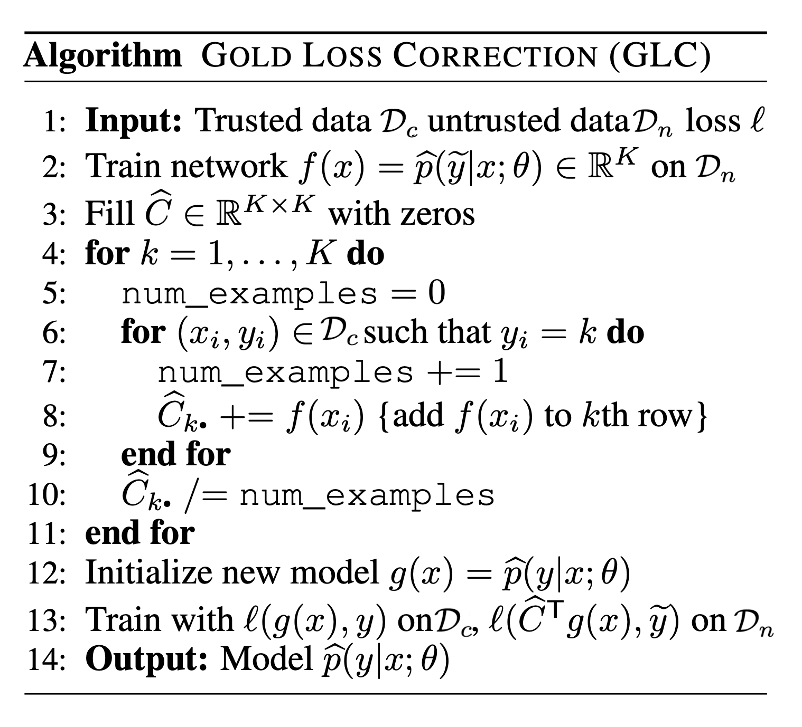
如果可信训练数据集 \mathcal{D}_c 足够大，我们可以在干净数据上训练一个神经网络，然后将其知识通过校正后的伪标签蒸馏到主模型中（即最终用于测试时预测的模型）（Li 等，2017）。主模型在整个数据集 \mathcal{D} = \mathcal{D}_c \cup \mathcal{D}_n 上进行训练。可选地，如果知识图谱中存在标签关系的“侧”信息，也可以将其融入蒸馏过程，以提升在有限数据上训练的网络的预测鲁棒性。
标签校正蒸馏的工作流程如下：
样本重加权与筛选#
某些样本比其他样本更可能拥有不准确的标签。这种估计为我们在损失函数中对哪些样本给予更低或更高的权重提供了直觉。然而，考虑到训练数据中存在的两类偏差——类别不平衡和噪声标签——实际上存在矛盾的偏好：我们希望使用损失较大的样本来平衡标签分布，但又希望使用损失较小的样本来缓解潜在噪声。因此一些工作（Ren 等，2018）认为，为了学习训练数据偏差的一般形式，必须有一个小的无偏验证集来指导训练。本节介绍的样本重加权方法均假设能访问一小份干净的可信数据集。
考虑一个带有随机分类噪声的二分类任务 y, \hat{y} \in \{-1, +1\}，标签翻转概率 \rho_{-1}, \rho_{+1} \in [0, 0.5) 定义为：
Liu & Tao（2015） 应用重要性重加权来调整观测到的 \hat{y} 的加权分布，使其匹配不可观测的 y 的分布。令 \mathcal{D} 为真实数据分布，\mathcal{D}_\rho 为损坏版本。
因为，
因此分配给噪声样本的权重为，
其中 P_{\mathcal{D}_\rho}(\tilde{y} \vert \mathbf{x}) 可以使用简单的 logistic 回归估计，但噪声率的估计更具挑战性。朴素的交叉验证虽然可行，但代价高昂，因为其质量取决于可用的可信标签数量。论文首先近似噪声率的上界 \rho_\tilde{y} \leq P_{\mathcal{D}_\rho}(- \tilde{y} \vert \mathbf{x})，然后使用一个温和的假设来高效估计它们 \hat{\rho}_{\tilde{y}} = \min_{\mathbf{x} \in {\mathbf{x}_1, \dots, \mathbf{x}_n}} \hat{P}_{\mathcal{D}_\rho}(- \tilde{y} \vert \mathbf{x})。实验显示，重要性重加权的优势因数据集而异，且通常在噪声率较高时更有帮助。
样本重加权方案也可以由一个单独的网络学习。学习重加权（L2R；Ren 等，2018）是一种元学习方法，直接优化权重以在已知干净数据验证集上取得最佳验证性能。每个样本根据其梯度方向获得权重。需要最小化的加权损失 \theta^*(\mathbf{w}) 包含一组训练权重 \{w_i\}_{i=1}^n，这些权重作为未知超参数。这些样本训练权重 w_i 被学习以最小化在无偏验证集 \mathcal{D}_c = \{x^\text{valid}_j\}_{j=1}^m 上的损失。
学习过程涉及两个嵌套的优化循环，因此代价较高，训练时间是原来的 3 倍。
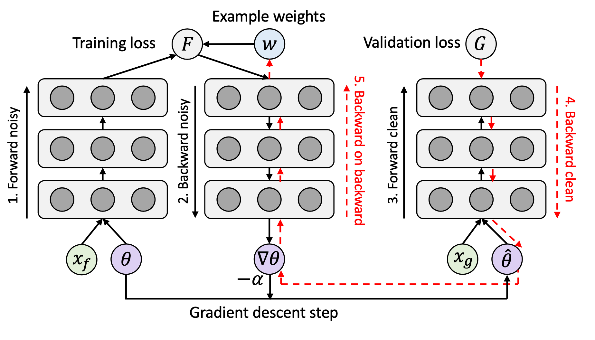
他们在 (1) 二分类 MNIST（测试类别分布不平衡时 L2R 的鲁棒性）和 (2) 带有噪声标签的 CIFAR-10 上进行了实验。L2R 在当时的两项任务上均优于其他基线方法。
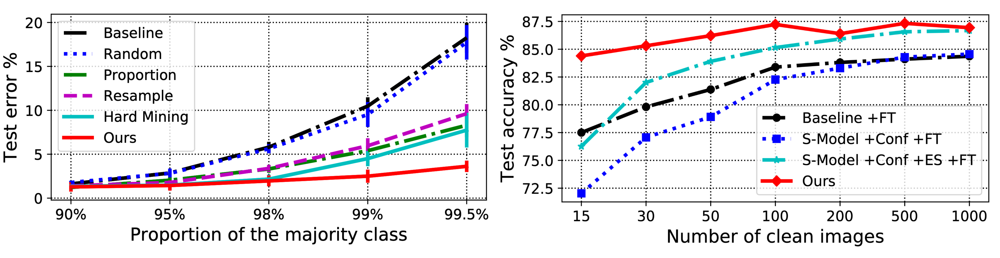
MentorNet（Jiang 等，2018）使用教师-学生课程学习来对数据加权。它包含两个不同的网络：导师网络和学生网络。导师网络为学生提供数据驱动的课程（即样本训练加权方案），让学生专注于学习可能是正确标签的样本。
令 g_\psi 是由 \psi 参数化的 MentorNet，f_\theta 是由 \theta 参数化的 StudentNet，G 是由 \lambda 参数化的预定义课程。对于 k 类分类任务的训练数据 \mathcal{D} = \{(\mathbf{x}_i, y_i)\}_{i=1}^n，MentorNet 需要预测一个随时间变化的潜在权重变量 \mathbf{w} \in [0, 1]^{n \times k}，以指导 StudentNet 的学习。该权重以 StudentNet 处理的中间特征 f、\mathbf{z}_i = \phi_{f_\theta}(\mathbf{x}_i, y_i) 为输入：
StudentNet 学习最小化以下学习目标，
导师网络 g_\psi 使用输入 (\phi_{f_\theta}(\mathbf{x}_i, y_i), w^{*}_i) 上的交叉熵进行训练，其中 v^*_i=1 如果 y_i 是已知正确标签则为 1，否则为 0。MentorNet 的架构不必非常复杂。论文中他们采用了一个 LSTM 层来捕捉随时间的预测方差。
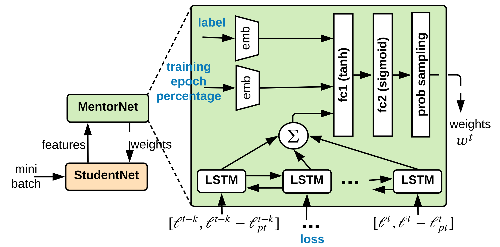
与 MentorNet 由一个网络显式学习对另一个网络的加权方案和课程不同，Co-teaching（Han 等，2018）同时训练两个神经网络 f_1 和 f_2，并让它们相互选择性地提供数据来教对方。Co-teaching 包含三个步骤：
根据其实验，当噪声率较高或损坏转移矩阵不对称时，co-teaching 的表现优于 F-correction。
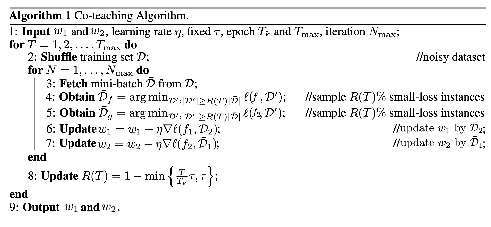
引用#
引用方式：
Weng, Lilian. (2022年4月). Learning with not enough data part 3: data generation. Lil’Log. https://lilianweng.github.io/posts/2022-04-15-data-gen/.
@article{weng2022datagen,
title = "Learning with not Enough Data Part 3: Data Generation",
author = "Weng, Lilian",
journal = "Lil'Log",
year = "2022",
month = "Apr",
url = "https://lilianweng.github.io/posts/2022-04-15-data-gen/"
}
参考文献#
[1] Zhang 等. “Adversarial AutoAugment” ICLR 2020.
[2] Kumar 等. “Data Augmentation using Pre-trained Transformer Models.” AACL 2020 Workshop.
[3] Anaby-Tavor 等. “Not enough data? Deep learning to rescue!” AAAI 2020.
[4] Wang 等. “Want To Reduce Labeling Cost? GPT-3 Can Help.” EMNLP 2021.
[5] Wang 等. “Towards Zero-Label Language Learning.” arXiv preprint arXiv:2109.09193 (2021).
[6] Schick & Schutze. “Generating Datasets with Pretrained Language Models." EMNLP 2021.
[7] Han 等. “Unsupervised Neural Machine Translation with Generative Language Models Only.” arXiv preprint arXiv:2110.05448 (2021).
[8] Guo 等. “Augmenting data with mixup for sentence classification: An empirical study.” arXiv preprint arXiv:1905.08941 (2019).
[9] Ekin D. Cubuk 等. “AutoAugment: Learning augmentation policies from data.” arXiv preprint arXiv:1805.09501 (2018).
[10] Daniel Ho 等. “Population Based Augmentation: Efficient Learning of Augmentation Policy Schedules.” ICML 2019.
[11] Cubuk & Zoph 等. “RandAugment: Practical automated data augmentation with a reduced search space.” arXiv preprint arXiv:1909.13719 (2019).
[12] Zhang 等. “mixup: Beyond Empirical Risk Minimization.” ICLR 2017.
[13] Yun 等. “CutMix: Regularization Strategy to Train Strong Classifiers with Localizable Features.” ICCV 2019.
[14] Kalantidis 等. “Mixing of Contrastive Hard Negatives” NeurIPS 2020.
[15] Wei & Zou. “EDA: Easy data augmentation techniques for boosting performance on text classification tasks.” EMNLP-IJCNLP 2019.
[16] Kobayashi. “Contextual Augmentation: Data Augmentation by Words with Paradigmatic Relations.” NAACL 2018
[17] Fang 等. “CERT: Contrastive self-supervised learning for language understanding.” arXiv preprint arXiv:2005.12766 (2020).
[18] Gao 等. “SimCSE: Simple Contrastive Learning of Sentence Embeddings.” arXiv preprint arXiv:2104.08821 (2020). [代码]
[19] Shen 等. “A Simple but Tough-to-Beat Data Augmentation Approach for Natural Language Understanding and Generation.” arXiv preprint arXiv:2009.13818 (2020) [代码]
[20] Wang & van den Oord. “Multi-Format Contrastive Learning of Audio Representations.” NeurIPS Workshop 2020.
[21] Wu 等. “Conditional BERT Contextual Augmentation” arXiv preprint arXiv:1812.06705 (2018).
[22] Zhu 等. “FreeLB: Enhanced Adversarial Training for Natural Language Understanding.” ICLR 2020.
[23] Affinity and Diversity: Quantifying Mechanisms of Data Augmentation Gontijo-Lopes 等. 2020 (https://arxiv.org/abs/2002.08973)
[24] Song 等. “Learning from Noisy Labels with Deep Neural Networks: A Survey.” TNNLS 2020.
[25] Zhang & Sabuncu. “Generalized cross entropy loss for training deep neural networks with noisy labels.” NeurIPS 2018.
[26] Goldberger & Ben-Reuven. “Training deep neural-networks using a noise adaptation layer.” ICLR 2017.
[27] Sukhbaatar 等. “Training convolutional networks with noisy labels.” ICLR Workshop 2015.
[28] Patrini 等. “Making Deep Neural Networks Robust to Label Noise: a Loss Correction Approach” CVPR 2017.
[29] Hendrycks 等. “Using trusted data to train deep networks on labels corrupted by severe noise.” NeurIPS 2018.
[30] Zhang & Sabuncu. “Generalized cross entropy loss for training deep neural networks with noisy labels.” NeurIPS 2018.
[31] Lyu & Tsang. “Curriculum loss: Robust learning and generalization against label corruption.” ICLR 2020.
[32] Han 等. “Co-teaching: Robust training of deep neural networks with extremely noisy labels.” NeurIPS 2018. (代码)
[33] Ren 等. “Learning to reweight examples for robust deep learning.” ICML 2018.
[34] Jiang 等. “MentorNet: Learning data-driven curriculum for very deep neural networks on corrupted labels.” ICML 2018.
[35] Li 等. “Learning from noisy labels with distillation.” ICCV 2017.
[36] Liu & Tao. “Classification with noisy labels by importance reweighting.” TPAMI 2015.
[37] Ghosh 等. “Robust loss functions under label noise for deep neural networks.” AAAI 2017.
[38] Hu 等. “Does Distributionally Robust Supervised Learning Give Robust Classifiers? “ ICML 2018.